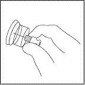

RÉSUMÉ DES CARACTÉRISTIQUES DU PRODUIT
ANSM - Mis à jour le : 25/04/2014
RISPERDALCONSTA L.P. 50 mg/2 ml, poudre et solvant pour suspension injectable à libération prolongée en seringue préremplie
2. COMPOSITION QUALITATIVE ET QUANTITATIVE
Pour un flacon.
1 ml de suspension reconstituée contient 25 mg de rispéridone.
Excipients à effet notoire : 1 ml de suspension reconstituée contient 3 mg de sodium.
Pour la liste complète des excipients, voir rubrique 6.1.
Poudre et solvant pour suspension injectable à libération prolongée.
Flacon de poudre : poudre fluide blanche à blanc cassé.
Seringue préremplie de solvant pour reconstitution : solution aqueuse limpide, incolore.
4.1. Indications thérapeutiques
RISPERDALCONSTA L.P. est indiqué dans le traitement d'entretien de la schizophrénie chez les patients actuellement stabilisés par des antipsychotiques oraux.
4.2. Posologie et mode d'administration
Adultes
Dose initiale
Pour la majorité des patients la dose recommandée est de 25 mg par voie intramusculaire toutes les deux semaines. Chez les patients traités par une dose fixe de rispéridone orale depuis deux semaines ou plus, le schéma de conversion suivant doit être pris en compte. Les patients traités par une dose inférieure ou égale à 4 mg de rispéridone orale doivent recevoir RISPERDALCONSTA L.P. 25 mg, chez les patients traités par des doses orales plus élevées, la dose plus élevée de RISPERDALCONSTA L.P. 37,5 mg doit être envisagée.
Lorsque les patients ne sont pas actuellement sous traitement par la rispéridone orale, la posologie du pré-traitement oral doit être prise en compte dans le choix de la dose initiale I.M. La dose initiale recommandée est de 25 mg de RISPERDALCONSTA L.P. toutes les deux semaines. Pour les patients recevant des doses plus élevées de l’antipsychotique oral en cours, la dose plus élevée de RISPERDALCONSTA L.P. 37,5 mg doit être envisagée.
Une couverture antipsychotique suffisante par la rispéridone orale ou le traitement antipsychotique antérieur doit être assurée du fait d’un délai de latence de 3 semaines après la première injection de RISPERDALCONSTA L.P. (voir rubrique 5.2).
RISPERDALCONSTA L.P. ne doit pas être utilisé dans les exacerbations aiguës de la schizophrénie sans assurer une couverture antipsychotique suffisante par la rispéridone orale ou l’antipsychotique antérieur pendant la période de latence de 3 semaines suivant la première injection de RISPERDALCONSTA L.P.
Dose d’entretien
Pour la majorité des patients la dose recommandée est de 25 mg par voie intramusculaire toutes les deux semaines. Certains patients peuvent bénéficier des doses plus élevées de 37,5 mg ou 50 mg. Un ajustement posologique à une dose supérieure ne doit pas être réalisé plus fréquemment que toutes les 4 semaines. L’effet de cette augmentation de dose ne doit pas être attendu avant un délai de 3 semaines après la première injection à la dose plus élevée. Aucun bénéfice supplémentaire n’a été observé à la dose de 75 mg dans les essais cliniques. Des doses supérieures à 50 mg toutes les deux semaines ne sont pas recommandées.
Sujets âgés
Aucun ajustement posologique n’est nécessaire. La dose recommandée est de 25 mg par voie intramusculaire toutes les deux semaines. Lorsque les patients ne sont pas actuellement traités par la rispéridone orale, la dose recommandée est de 25 mg de RISPERDALCONSTA L.P. toutes les deux semaines.
Pour les patients recevant une dose fixe de rispéridone orale depuis deux semaines ou plus, le schéma de conversion suivant doit être pris en compte. Les patients traités par une dose inférieure ou égale à 4 mg de rispéridone orale doivent recevoir RISPERDALCONSTA L.P. 25 mg, pour les patients traités par des doses orales plus élevées, la dose plus élevée de RISPERDALCONSTA L.P. 37,5 mg doit être envisagée.
Une couverture antipsychotique suffisante doit être assurée pendant la période de latence de 3 semaines après la première injection de RISPERDALCONSTA L.P. (voir rubrique 5.2). Les données cliniques avec RISPERDALCONSTA L.P. sont limitées chez les sujets âgés. RISPERDALCONSTA L.P. sera utilisé avec prudence chez les sujets âgés.
Insuffisance hépatique et Insuffisance rénale
RISPERDALCONSTA L.P. n’a pas été étudié chez les patients présentant une insuffisance hépatique ou rénale.
En cas de nécessité de traitement par RISPERDALCONSTA L.P. chez des patients insuffisants hépatiques ou rénaux, une dose initiale de 0,5 mg deux fois par jour de rispéridone orale est recommandée pendant la première semaine. La deuxième semaine 1 mg deux fois par jour ou 2 mg une fois par jour peuvent être administrés. Lorsqu’une dose orale journalière totale d’au moins 2 mg est bien tolérée, une injection de 25 mg de RISPERDALCONSTA L.P. peut être administrée toutes les 2 semaines.
Une couverture antipsychotique suffisante doit être assurée pendant la période de latence de 3 semaines après la première injection de RISPERDALCONSTA L.P. (voir rubrique 5.2).
Population pédiatrique
La sécurité et l’efficacité de RISPERDALCONSTA L.P chez les enfants âgés de moins de 18 ans n’ont pas été établies. Aucune donnée n'est disponible.
Mode d’administration
RISPERDALCONSTA L.P. doit être administré toutes les 2 semaines par injection intramusculaire profonde dans le muscle deltoïde ou fessier à l’aide de l’aiguille sécurisée appropriée. Pour une administration dans le muscle deltoïde, utiliser l’aiguille de 25 mm en alternant les injections entre les deux bras. Pour une administration dans le muscle fessier, utiliser l’aiguille de 50 mm en alternant les injections entre les deux muscles fessiers. Ne pas administrer par voie intraveineuse (voir rubriques 4.4 et 6.6).
Pour les instructions de reconstitution du médicament avant administration, voir rubrique 6.6.
Hypersensibilité à la substance active ou à l’un des excipients mentionnés à la rubrique 6.1.
4.4. Mises en garde spéciales et précautions d'emploi
Chez les patients naïfs de rispéridone, il est recommandé d'établir la tolérance avec de la rispéridone orale avant d'initier le traitement par RISPERDALCONSTA L.P. (voir rubrique 4.2).
Patient âgé dément
RISPERDALCONSTA L.P. n'a pas été étudié chez les patients âgés déments, en conséquence son utilisation n'est pas indiquée chez ce groupe de patients.
RISPERDALCONSTA L.P. n’est pas autorisé dans le traitement des troubles comportementaux liés à la démence.
Augmentation de la mortalité chez les personnes âgées démentes
Dans une méta-analyse de 17 essais contrôlés réalisés avec des antipsychotiques atypiques, dont RISPERDAL oral, des patients âgés déments traités par des antipsychotiques atypiques ont présenté une augmentation de la mortalité comparativement au placebo. Dans des essais contrôlés versus placebo réalisés avec RISPERDAL oral dans cette population, l’incidence de la mortalité était de 4,0 % pour les patients traités par RISPERDAL comparée à 3,1% pour les patients traités par placebo. L’odd ratio (intervalle de confiance exact à 95 %) était de 1,21 (0,7 ; 2,1). L’âge moyen (extrêmes) des patients décédés était de 86 ans (extrêmes 67-100 ans). Les données de deux études observationnelles conduites à grande échelle ont également montré que les personnes âgées démentes traitées par des antipsychotiques conventionnels présentaient un risque de mortalité légèrement augmenté comparativement à celles non traitées. Il n’existe pas de données suffisantes pour donner une estimation sûre de l’ampleur précise de ce risque. La cause de l’augmentation de ce risque n’est pas connue. L’imputabilité de ces résultats d’augmentation de la mortalité dans les études observationnelles au médicament antipsychotique plutôt qu’à certaine(s) caractéristique(s) des patients n’est pas claire.
Utilisation concomitante avec le furosémide
Dans les essais contrôlés versus placebo réalisés avec RISPERDAL oral chez des patients âgés déments, une incidence plus élevée de la mortalité a été observée chez les patients traités par furosémide plus rispéridone (7,3 %; âge moyen 89 ans, extrêmes 75-97 ans) comparativement aux patients traités par la rispéridone seule (3,1 %; âge moyen 84 ans, extrêmes 70-96 ans) ou le furosémide seul (4,1 %; âge moyen 80 ans, extrêmes 67-90 ans). L'augmentation de la mortalité chez les patients traités par furosémide plus rispéridone a été observée dans deux des quatre essais cliniques. L'utilisation concomitante de rispéridone avec d'autres diurétiques (principalement des diurétiques thiazidiques administrés à faible dose) n'a pas été associée à des observations similaires.
Aucun mécanisme physiopathologique n'a été identifié pour expliquer cet effet, et aucun motif cohérent de décès n'a été observé. Toutefois, la prudence est nécessaire et le rapport risque/bénéfice de cette association ou d'un traitement concomitant par d'autres diurétiques puissants doit être pris en compte préalablement à toute décision d'utilisation.
Il n'a pas été observé d'augmentation de la mortalité chez les patients prenant d'autres diurétiques comme traitement concomitant à la rispéridone. Indépendamment du traitement, la déshydratation est un facteur de risque de mortalité et doit donc être soigneusement évitée chez les patients âgés déments.
Evènements indésirables cérébrovasculaires
Dans des essais cliniques randomisés, contrôlés versus placebo chez les patients déments traités par certains antipsychotiques atypiques, un risque de survenue d'évènements indésirables cérébrovasculaires environ 3 fois supérieur a été observé. L'analyse des données poolées de six essais contrôlés versus placebo menés avec RISPERDAL principalement chez des patients âgés (> 65 ans) déments montre que les accidents cérébrovasculaires (graves et non graves, combinés) sont survenus chez 3,3 % (33/1009) des patients traités par la rispéridone et chez 1,2 % (8/712) des patients traités par placebo.
L'odd ratio (intervalle de confiance exact à 95 %) était de 2,96 (1,34; 7,50). Le mécanisme de cette augmentation de risque n'est pas connu. Une augmentation du risque ne peut être exclue pour d'autres antipsychotiques ou d'autres populations de patients. RISPERDALCONSTA L.P. doit être utilisé avec prudence chez les patients présentant des facteurs de risques d'accident vasculaire cérébral.
Hypotension orthostatique
En raison des propriétés alpha-bloquantes de la rispéridone, une hypotension (orthostatique) peut survenir, principalement à l'initiation du traitement. Une hypotension cliniquement significative a été observée après commercialisation lors de l'utilisation concomitante de rispéridone et d'un traitement antihypertenseur. La rispéridone doit être utilisée avec précaution chez les patients présentant des risques cardiovasculaires connus (par exemple, insuffisance cardiaque, infarctus du myocarde, anomalies de la conduction, déshydratation, hypovolémie ou maladie cérébrovasculaire). Le rapport bénéfice/risque de la poursuite du traitement par RISPERDALCONSTA L.P. doit être évalué lorsqu'une hypotension orthostatique cliniquement significative persiste.
Leucopénie, neutropénie et agranulocytose
Des cas de leucopénie, neutropénie et agranulocytose ont été rapportés avec les antipsychotiques, dont RISPERDALCONSTA L.P.. Une agranulocytose a été très rarement rapportée (< 1/10 000 patients) lors de la surveillance après commercialisation.
Les patients ayant des antécédents cliniquement significatifs d’une faible numération de globules blancs (NGB) ou de leucopénie/neutropénie d’origine médicamenteuse doivent être surveillés pendant les tous premiers mois de traitement et l'arrêt de RISPERDALCONSTA L.P. doit être considéré au premier signe d'une baisse cliniquement significative de la NGB en l'absence d'autres facteurs causaux.
Les patients ayant une neutropénie cliniquement significative doivent être attentivement surveillés afin de dépister une fièvre ou d'autres symptômes ou signes d'infection et traités rapidement si de tels symptômes ou signes apparaissent. Les patients ayant une neutropénie sévère (numération absolue de neutrophiles < 1 x 109/L) doivent arrêter RISPERDALCONSTA L.P. et leur NGB doit être suivie jusqu'à rétablissement.
Dyskinésie tardive/Symptômes extrapyramidaux (DT/SEP)
Les médicaments qui possèdent des propriétés antagonistes dopaminergiques ont été associés à l'induction de dyskinésie tardive caractérisée par des mouvements rythmiques involontaires, prédominant au niveau de la langue et/ou du visage. La survenue de symptômes extrapyramidaux est un facteur de risque de dyskinésie tardive. Si les signes et symptômes d'une dyskinésie tardive apparaissent, l'arrêt de tous les antipsychotiques doit être envisagé.
Syndrome malin des neuroleptiques (SMN)
Le Syndrome Malin des Neuroleptiques, caractérisé par une hyperthermie, une rigidité musculaire, une instabilité du système nerveux autonome, une altération de la conscience et une élévation des taux sériques de créatine phosphokinase a été rapporté avec les antipsychotiques. Des signes cliniques supplémentaires peuvent inclure une myoglobinurie (rhabdomyolyse) et une insuffisance rénale aiguë. En cas de survenue, tous les antipsychotiques, dont RISPERDALCONSTA L.P., doivent être arrêtés.
Maladie de Parkinson et démence à corps de Lewy
Les prescripteurs doivent évaluer le rapport risque/bénéfice lors de la prescription d'antipsychotiques, dont RISPERDALCONSTA L.P., chez des patients présentant une Maladie de Parkinson ou une Démence à Corps de Lewy. La Maladie de Parkinson peut s'aggraver sous rispéridone.
Ces deux groupes de patients peuvent présenter une augmentation du risque de survenue d'un Syndrome Malin des Neuroleptiques ainsi qu'une sensibilité accrue aux médicaments antipsychotiques; ces patients étaient exclus des essais cliniques. Les symptômes de cette sensibilité accrue peuvent inclure une confusion, une somnolence, une instabilité posturale avec chutes fréquentes, en plus des symptômes extrapyramidaux.
Hyperglycémie et diabète
Hyperglycémie, diabète et exacerbation d'un diabète préexistant ont été rapportés au cours du traitement par RISPERDALCONSTA L.P. Dans certains cas, une prise de poids antérieure a été rapportée, ce qui peut être un facteur prédisposant. L'association à une acidocétose a été très rarement rapportée et l'association à un coma diabétique rarement rapportée. Une surveillance clinique adéquate est recommandée conformément aux recommandations relatives aux antipsychotiques. Les symptômes d'hyperglycémie (tels que polydipsie, polyurie, polyphagie et fatigue) doivent être recherchés chez les patients traités par antipsychotiques atypiques, y compris RISPERDALCONSTA L.P. Une surveillance régulière doit être effectuée afin de détecter une aggravation de la glycémie chez les patients diabétiques.
Prise de poids
Une prise de poids cliniquement significative a été rapportée avec l'utilisation de RISPERDALCONSTA L.P. Le poids doit être contrôlé régulièrement.
Hyperprolactinémie
Les études sur cultures de tissus suggèrent que la croissance cellulaire dans les tumeurs du sein chez l'Homme peut être stimulée par la prolactine. Bien qu'une association claire avec l'administration d'antipsychotiques n'ait pas été établie à ce jour dans les études cliniques et épidémiologiques, la prudence est recommandée chez les patients présentant des antécédents médicaux significatifs. RISPERDALCONSTA L.P. doit être utilisé avec prudence chez les patients présentant des antécédents d'hyperprolactinémie et chez les patients présentant des tumeurs potentiellement prolactine-dépendantes.
Allongement de l'intervalle QT
Un allongement de l'intervalle QT a été très rarement rapporté après commercialisation. Comme avec d'autres antipsychotiques, la prudence est nécessaire lorsque la rispéridone est prescrite à des patients présentant une maladie cardiovasculaire connue, des antécédents familiaux d'allongement de l'intervalle QT, une bradycardie, ou des troubles électrolytiques (hypokaliémie, hypomagnésémie), car ils peuvent augmenter le risque d'effets arythmogènes, ainsi qu'en cas d'utilisation concomitante de médicaments connus pour allonger l'intervalle QT.
Convulsions
RISPERDALCONSTA L.P. doit être utilisé avec prudence chez les patients présentant des antécédents de convulsions ou d'autres situations cliniques pouvant potentiellement abaisser le seuil épileptogène.
Priapisme
Un priapisme peut survenir au cours du traitement par RISPERDALCONSTA L.P. du fait de ses propriétés alpha-adrénergiques bloquantes.
Régulation de la température corporelle
Une altération de la capacité corporelle à diminuer la température corporelle centrale a été rapportée avec les médicaments antipsychotiques. La prudence est recommandée en cas de prescription de RISPERDALCONSTA L.P. à des patients susceptibles d'être exposés à certaines situations pouvant contribuer à une augmentation de la température corporelle centrale, par exemple exercice physique intense, exposition à une température extrême, traitement concomitant par des médicaments ayant une activité anticholinergique ou tendance à la déshydratation.
Thromboembolie veineuse
Des cas de thromboembolies veineuses (TEV) ont été rapportés avec les antipsychotiques. Les patients traités par des antipsychotiques présentant souvent des facteurs de risque acquis de TEV, tout facteur de risque potentiel de TEV doit être identifié avant et pendant le traitement par RISPERDALCONSTA L.P. et des mesures préventives doivent être mises en œuvre.
Syndrome de l’iris hypotonique peropératoire
Un syndrome de l'iris hypotonique peropératoire (SIHP) a été observé au cours d’interventions chirurgicales de la cataracte chez des patients traités par des médicaments antagonistes des récepteurs alpha1a- adrénergiques, y compris RISPERDALCONSTA L.P. (voir rubrique 4.8).
Le SIHP peut augmenter le risque de complications oculaires pendant et après l'opération. L'utilisation actuelle ou antérieure de médicaments ayant un effet antagoniste des récepteurs alpha1a- adrénergiques doit être portée à la connaissance du chirurgien ophtalmologiste avant l'intervention chirurgicale. Le bénéfice potentiel de l'arrêt du traitement par alpha1-bloquant avant l’intervention chirurgicale de la cataracte n'a pas été établi et doit être mis en balance avec le risque d'arrêt du traitement antipsychotique.
Effet antiémétique
Un effet antiémétique a été observé au cours des études précliniques réalisées avec la rispéridone. Cet effet, lorsqu’il survient chez l’homme, peut masquer les signes et les symptômes de surdosage de certains médicaments ou certaines situations cliniques telles qu’une occlusion intestinale, un syndrome de Reye et une tumeur cérébrale.
Insuffisance rénale ou hépatique
Bien que l'administration de rispéridone orale ait été étudiée, RISPERDALCONSTA L.P. n'a pas été étudié chez les patients insuffisants rénaux ou hépatiques. RISPERDALCONSTA L.P. doit être administré avec prudence chez ce groupe de patients (voir rubrique 4.2).
Administration
La prudence est nécessaire pour éviter toute injection accidentelle de RISPERDALCONSTA L.P. dans un vaisseau sanguin.
Excipients
Ce médicament contient moins d'1 mmol de sodium (23 mg) par injection, c'est-à-dire qu'il est essentiellement « sans sodium ».
4.5. Interactions avec d'autres médicaments et autres formes d'interactions
Les études d’interactions ont été réalisées avec RISPERDAL oral.
Comme pour d’autres antipsychotiques, la prudence est recommandée lorsque la rispéridone est prescrite avec des médicaments connus pour allonger l’intervalle QT, tels que les antiarythmiques (par exemple, quinidine, disopyramide, procaïnamide, propafénone, amiodarone, sotalol), les antidépresseurs tricycliques (amitriptyline), les antidépresseurs tétracycliques (maprotiline), certains antihistaminiques, d’autres antipsychotiques, certains antipaludéens (quinine et méfloquine), et certains médicaments entraînant des troubles électrolytiques (hypokaliémie, hypomagnésémie), une bradycardie, ou ceux qui inhibent le métabolisme de la rispéridone. Cette liste est indicative et non exhaustive.
Effet de RISPERDALCONSTA L.P. sur d’autres médicaments
La rispéridone doit être administrée avec prudence en association avec d’autres médicaments agissant au niveau central en particulier l’alcool, les opiacés, les antihistaminiques et les benzodiazépines du fait d’une augmentation du risque d’effet sédatif.
RISPERDALCONSTA L.P. peut antagoniser l’effet de la lévodopa et d’autres agonistes dopaminergiques. Lorsque l’association s’avère nécessaire, en particulier aux stades terminaux de la maladie de Parkinson, la dose minimale efficace de chaque traitement doit être prescrite.
Une hypotension cliniquement significative a été observée après commercialisation lors de l’utilisation concomitante de rispéridone et d’un traitement anti-hypertenseur.
RISPERDAL n’a pas montré d’effet cliniquement significatif sur la pharmacocinétique du lithium, du valproate, de la digoxine ou du topiramate.
Effets potentiels d’autres médicaments sur RISPERDALCONSTA L.P.
Une diminution des concentrations plasmatiques de la fraction antipsychotique active de la rispéridone a été observée avec la carbamazépine. Des effets similaires peuvent être observés par exemple avec la rifampicine, la phénytoïne et le phénobarbital qui sont aussi des inducteurs du CYP 3A4 hépatique et de la P-glycoprotéine. Lorsque la carbamazépine ou d’autres inducteurs du CYP 3A4 hépatique/P-glycoprotéine (P-gp) sont instaurés ou arrêtés, le prescripteur doit ré-évaluer la posologie de RISPERDALCONSTA L.P.
La fluoxétine et la paroxétine, inhibiteurs du CYP 2D6, augmentent les concentrations plasmatiques de rispéridone, mais à un moindre degré celles de la fraction antipsychotique active. D’autres inhibiteurs du CYP 2D6, tels que la quinidine, peuvent modifier les concentrations plasmatiques de la rispéridone de la même façon. Lorsque l’administration concomitante de fluoxétine ou de paroxétine est instaurée ou arrêtée, le prescripteur doit ré-évaluer la posologie de RISPERDALCONSTA L.P.
Le vérapamil, un inhibiteur du CYP 3A4 et la P-gp, augmente les concentrations plasmatiques de rispéridone.
La galantamine et le donépézil ne montrent pas d’effets cliniquement significatifs sur la pharmacocinétique de la rispéridone et de la fraction antipsychotique active.
Les phénothiazines, les antidépresseurs tricycliques, et certains béta-bloquants peuvent augmenter les concentrations plasmatiques de rispéridone mais pas celles de la fraction antipsychotique active. L’amitriptyline ne modifie pas la pharmacocinétique de la rispéridone ou de la fraction antipsychotique active. La cimétidine et la ranitidine augmentent la biodisponibilité de la rispéridone, mais seulement de façon marginale celle de la fraction antipsychotique active. L’érythromycine, un inhibiteur du CYP 3A4, ne modifie pas la pharmacocinétique de la rispéridone et de la fraction antipsychotique active.
Voir rubrique 4.4 sur l’augmentation de la mortalité chez le patient âgé dément recevant de façon concomitante du furosémide.
Population pédiatrique
Les études d’interaction n’ont été réalisées que chez l’adulte.
Il n’existe pas de données adéquates sur l’utilisation de la rispéridone pendant la grossesse.
La rispéridone n’a pas montré d’effets tératogènes au cours des études effectuées chez l’animal mais d’autres types de toxicité sur la reproduction ont été observés (voir rubrique 5.3). Le risque potentiel chez l’homme n’est pas connu.
Les nouveau-nés exposés aux antipsychotiques (dont RISPERDALCONSTA L.P.) pendant le troisième trimestre de la grossesse, présentent un risque de réactions indésirables incluant des symptômes extrapyramidaux et/ou des symptômes de sevrage, pouvant varier en termes de sévérité et de durée après l’accouchement. Les réactions suivantes ont été rapportées : agitation, hypertonie, hypotonie, tremblements, somnolence, détresse respiratoire, trouble de l’alimentation. En conséquence, les nouveau-nés doivent être étroitement surveillés. RISPERDALCONSTA L.P. ne doit pas être utilisé au cours de la grossesse sauf si manifestement nécessaire.
Allaitement
Au cours des études animales, la rispéridone et la 9-hydroxy-rispéridone sont excrétées dans le lait. Il a été démontré que la rispéridone et la 9-hydroxy-rispéridone sont également excrétées dans le lait maternel en faibles quantités. Il n’y a pas de données disponibles sur les effets indésirables chez le nourrisson allaité. En conséquence, les avantages de l’allaitement doivent être évalués au regard des risques potentiels pour l’enfant.
Fertilité
Comme avec d'autres médicaments antagonistes des récepteurs dopaminergiques D2, RISPERDALCONSTA L.P. augmente le taux de prolactine. L'hyperprolactinémie peut inhiber la GnRH hypothalamique, entrainant une diminution de la sécrétion des gonadotrophines pituitaires. Par la suite, cela peut inhiber la fonction de reproduction en altérant la stéroïdogenèse gonadique chez les patients hommes et femmes.
Aucun effet pertinent n’a été observé dans les études non cliniques.
4.7. Effets sur l'aptitude à conduire des véhicules et à utiliser des machines
Les effets indésirables (EI) les plus fréquemment rapportés (fréquence ³1/10) sont : Insomnie, anxiété, céphalées, infections des voies respiratoires hautes, parkinsonisme et dépression.
Les effets indésirables apparus dose-dépendantes incluaient le parkinsonisme et l’akathisie.
Des réactions graves au site d’injection telles que : nécrose au site d’injection, abcès, cellulite, ulcère cutané, hématome, kyste et nodule ont été rapportées après commercialisation. La fréquence est considérée comme indéterminée (ne pouvant être estimée à partir des données disponibles). Des cas isolés ont nécessité une intervention chirurgicale.
Les EI suivants sont tous les EI rapportés avec la rispéridone au cours des essais cliniques et après commercialisation par catégorie de fréquence estimée à partir des essais cliniques RISPERDALCONSTA L.P.. Les termes et fréquences suivants sont utilisés : très fréquent (³1/10), fréquent (³1/100, <1/10), peu fréquent (³1/1 000, <1/100), rare (³1/10 000, <1/1 000) et très rare (<1/10 000).
Au sein de chaque groupe de fréquence, les évènements indésirables sont présentés suivant un ordre décroissant de gravité.
|
Classes de Systèmes Organes |
Effet indésirable |
||||
|
Fréquence |
|||||
|
Très fréquent |
Fréquent |
Peu fréquent |
Rare |
Très rare |
|
|
Infections et infestations |
infection des voies respiratoires supérieures |
pneumonie, bronchite, sinusite, infection urinaire, grippe |
infection des voies respiratoires, cystite, infection auriculaire, infection oculaire, amygdalite, onychomycose, cellulite, infection, infection localisée, infection virale, acarodermatite, abcès sous-cutané |
|
|
|
Affections hématologiques et du système lymphatique |
|
anémie |
diminution de la numération de globules blancs, thrombocytopénie, diminution de l’hématocrite |
agranulocytosec, neutropénie, augmentation de la numération des éosinophilesc |
|
|
Affections du système immunitaire |
|
|
hypersensibilité |
réaction anaphylactiquec |
|
|
Affections endocriniennes |
|
hyperprolactinémiea |
présence de glucose urinaire |
sécrétion inappropriée de l’hormone antidiurétique |
|
|
Troubles du métabolisme et de la nutrition |
|
hyperglycémie, prise de poids, augmentation de l’appétit, perte de poids, diminution de l’appétit |
diabèteb, anorexie, augmentation des triglycérides sanguins, augmentation du cholestérol sanguin |
intoxication à l’eauc, hypoglycémie, hyperinsulinémiec, polydipsie |
acidocétose diabétique |
|
Affections psychiatriques |
insomnied, dépression, anxiété |
troubles du sommeil, agitation, diminution de la libido |
manie, état confusionnel, anorgasmie, nervosité, cauchemar |
émoussement affectif |
|
|
Affections du système nerveux |
parkinsonismed, céphalée |
sédation/somnolence, akathisied, dystonied, sensation vertigineuse, dyskinésied, tremblement |
dyskinésie tardive, accident cérébrovasculaire, perte de conscience, convulsiond, syncope, hyperactivité psychomotrice, trouble de l’équilibre, coordination anormale, vertige orthostatique, perturbation de l’attention, dysarthrie, dysgueusie, hypoesthésie, paresthésie |
syndrome malin des neuroleptiques, troubles cérébrovasculaires, non réponse aux stimuli, diminution du niveau de consciencec, coma diabétiquec, titubation céphalique |
|
|
Affections oculaires |
|
vision trouble |
conjonctivite, sécheresse oculaire, augmentation du larmoiement, hyperémie oculaire |
occlusion de l’artère rétinienne, glaucome, trouble du mouvement oculaire, révulsion oculaire, photophobie, croûtes au bord de la paupière, syndrome de l’iris hypotonique (peropératoire)c |
|
|
Affections de l’oreille et du labyrinthe |
|
|
vertige, acouphènes, douleur auriculaire |
|
|
|
Affections cardiaques |
|
tachycardie |
fibrillation auriculaire, bloc auriculo-ventriculaire, trouble de la conduction, allongement de l’intervalle QT, bradycardie, électrocardiogramme anormal, palpitations |
arythmie sinusale |
|
|
Affections vasculaires |
|
hypotension, hypertension |
hypotension orthostatique |
embolie pulmonaire, thrombose veineuse, bouffée de chaleur |
|
|
Affections respiratoires, thoraciques et médiastinales |
|
dyspnée, douleur pharyngolaryngée, toux, congestion nasale |
hyperventilation, encombrement des voies respiratoires, sifflements, épistaxis |
syndrome d’apnées du sommeil, pneumonie d’aspiration, congestion pulmonaire, râles, dysphonie, trouble respiratoire |
|
|
Affections gastro-intestinales |
|
douleur abdominale, gêne abdominale, vomissements, nausée, constipation, gastro-entérite, diarrhée, dyspepsie, sécheresse buccale, douleur dentaire |
incontinence fécale, dysphagie, flatulence |
pancréatite, occlusion intestinale, gonflement de la langue, fécalome, chéilite |
iléus |
|
Affections de la peau et du tissu sous-cutané |
|
rash |
prurit, alopécie, eczéma, sécheresse cutanée, érythème, décoloration de la peau, acné, dermatite séborrhéique |
toxidermie, urticaire, hyperkératose, pellicules, affection cutanée, lésion cutanée |
angioedème |
|
Affections musculo-squelettiques et systémiques |
|
spasmes musculaires, douleur musculo-squelettique, douleur dorsale, arthralgie |
augmentation de la créatine phosphokinase sanguine, raideur articulaire, enflure des articulations, faiblesse musculaire, douleur cervicale |
rhabdomyolyse, posture anormale |
|
|
Affections du rein et des voies urinaires |
|
incontinence urinaire |
pollakiurie, rétention urinaire, dysurie |
|
|
|
Affections gravidiques, puerpérales et périnatales |
|
|
|
syndrome de sevrage médicamenteux néonatalc |
|
|
Affections des organes de reproduction et du sein |
|
dysfonctionnement érectile, aménorrhée, galactorrhée |
trouble de l’éjaculation, menstruation retardée, trouble menstrueld, gynécomastie, dysfonctionnement sexuel, douleur mammaire, gêne mammaire, écoulement vaginal |
priapismec, engorgement mammairec, accroissement mammaire, écoulement mammaire |
|
|
Troubles généraux et anomalies au site d’administration |
|
œdèmed, pyrexie, douleur thoracique, asthénie, fatigue, douleur, réaction au site d’injection |
œdème de la face, frissons, augmentation de la température corporelle, démarche anormale, soif, gêne thoracique, malaise, sensation anormale, indurationc |
hypothermie, diminution de la température corporelle, froideur des extrémités, syndrome de sevrage médicamenteux, gêne |
|
|
Affections hépatobiliaires |
|
augmentation des transaminases, augmentation des gamma-glutamyltransférase |
augmentation des enzymes hépatiques |
jaunisse |
|
|
Lésions, intoxications et complications liées aux procédures |
|
chute |
douleur liée aux procédures |
|
|
a Une hyperprolactinémie peut dans certains cas conduire à une gynécomastie, des troubles menstruels, une aménorrhée, une galactorrhée.
b Dans les essais contrôlés versus placebo, un diabète a été rapporté chez 0,18 % des sujets traités par la rispéridone comparé à un taux de 0,11 % dans le groupe placebo. L’incidence globale de tous les essais cliniques était de 0,43 % chez tous les sujets traités par la rispéridone.
c Non observé lors des études cliniques RISPERDALCONSTA L.P. mais observé dans l’environnement post commercialisation avec la rispéridone.
d Le trouble extrapyramidal peut inclure : Parkinsonisme (hypersécrétion salivaire, rigidité musculo-squelettique, parkinsonisme, salivation, phénomène de la roue dentée, bradykinésie, hypokinésie, faciès figé, secousse musculaire, akinésie, rigidité de la nuque, rigidité musculaire, démarche parkinsonienne et réflexe palpébral anormal, tremblement parkinsonien de repos), akathisie (akathisie, impatiences, hyperkinésie, et syndrome des jambes sans repos), tremblement, dyskinésie (dyskinésie, secousse musculaire, choréoathétose, athétose, et myoclonie), dystonie. La dystonie inclut dystonie, hypertonie, torticolis, contractions musculaires involontaires, contracture musculaire, blépharospasme, révulsion oculaire, paralysie de la langue, spasme facial, laryngospasme, myotonie, opisthotonus, spasme oropharyngé, pleurothotonus, spasme de la langue, et trismus. Il est à noter qu’un spectre plus large de symptômes est inclus, qui n’ont pas nécessairement une origine extrapyramidale. L’insomnie inclut : insomnie initiale, insomnie du milieu de la nuit. La convulsion inclut : crise de Grand mal ; le trouble menstruel inclut : menstruation irrégulière, oligoménorrhée ; l’œdème inclut : œdème généralisé, œdème périphérique, œdème qui prend le godet.
Effets indésirables observés avec les formulations à base de palipéridone
La palipéridone est le métabolite actif de la rispéridone, par conséquent, les profils des effets indésirables de ces composés (incluant les deux formulations orale et injectable) s’appliquent l’un à l’autre. En plus des effets indésirables ci-dessus, les effets indésirables suivants ont été observés lors de l’utilisation de produits à base de palipéridone et peuvent être attendus avec RISPERDAL.
Affections cardiaques : Syndrome de tachycardie en posture orthostatique
Réaction anaphylactique
De rares cas de réaction anaphylactique après l’injection de RISPERDALCONSTA L.P. ont été rapportés après commercialisation chez les patients qui ont déjà tolérés la rispéridone par voie orale.
Effets de classe
Comme pour d’autres antipsychotiques, de très rares cas d’allongement du QT ont été rapportés après commercialisation avec la rispéridone. Les autres effets cardiaques de classe rapportés avec les antipsychotiques qui allongent l’intervalle QT incluent arythmie ventriculaire, fibrillation ventriculaire, tachycardie ventriculaire, mort subite, arrêt cardiaque et torsade de pointes.
Thromboembolie veineuse
Des cas de thromboembolies veineuses, y compris des cas d’embolies pulmonaires ainsi que de thromboses veineuses profondes, ont été rapportés avec les antipsychotiques (fréquence indéterminée).
Prise de poids
Dans une étude de 12 semaines, en double aveugle, contrôlée versus placebo, 9 % des patients traités par RISPERDALCONSTA L.P., comparé à 6 % de patients traités par le placebo, ont présenté une prise de poids ³ 7% en fin d’étude. Dans une étude d’un an en ouvert avec RISPERDALCONSTA L.P., les modifications de poids chez des patients individuels ont été généralement de ± 7 % par rapport à l’état initial, 25 % ont présenté une prise de poids ³ 7%.
Déclaration des effets indésirables suspectés
La déclaration des effets indésirables suspectés après autorisation du médicament est importante. Elle permet une surveillance continue du rapport bénéfice/risque du médicament. Les professionnels de santé déclarent tout effet indésirable suspecté via le système national de déclaration : Agence nationale de sécurité du médicament et des produits de Santé (ANSM) et réseau des Centres Régionaux de Pharmacovigilance. www.ansm.sante.fr.
Bien que le risque de surdosage soit moins important avec une forme parentérale qu'avec des médicaments administrés par voie orale, les informations relatives à la forme orale sont présentées ci-dessous.
Symptômes
En général, les signes et symptômes rapportés sont ceux résultant d'une exacerbation des effets pharmacologiques connus de la rispéridone. Ils incluent somnolence et sédation, tachycardie et hypotension, et symptômes extrapyramidaux. Au cours de surdosages, un allongement de l'intervalle QT et des convulsions ont été rapportés. Des torsades de pointes ont été rapportées dans le cadre de surdosage associant RISPERDAL oral et la paroxétine.
En cas de surdosage aigu, l'implication possible de plusieurs médicaments doit être prise en compte.
Traitement
Etablir et maintenir l'accès aux voies aériennes supérieures et assurer une oxygénation et une ventilation adéquates. La surveillance cardiovasculaire doit commencer immédiatement et doit inclure un suivi électrocardiographique continu afin de détecter d'éventuelles arythmies.
Il n'existe pas d'antidote spécifique à RISPERDAL. Des mesures appropriées de maintien des fonctions vitales doivent donc être mises en œuvre. L'hypotension et le collapsus circulatoire doivent être traités par des mesures appropriées telles que l'administration de solutés de remplissage et/ou d'agents sympathomimétiques. En cas d'apparition de symptômes extrapyramidaux sévères, un médicament anticholinergique doit être administré. Une supervision et un suivi médical rapprochés doivent être poursuivis jusqu'au rétablissement du patient.
5. PROPRIETES PHARMACOLOGIQUES
5.1. Propriétés pharmacodynamiques
Classe pharmacothérapeutique: Autres antipsychotiques, Code ATC: N05AX08.
Mécanisme d'action
La rispéridone est un antagoniste monoaminergique sélectif possédant des propriétés uniques. Elle a une forte affinité pour les récepteurs sérotoninergiques 5-HT2 et dopaminergiques D2. La rispéridone se lie également aux récepteurs alpha1-adrénergiques et, à un moindre degré, aux récepteurs histaminergiques H1 et alpha2-adrénergiques. La rispéridone n'a pas d'affinité pour les récepteurs cholinergiques. Bien que la rispéridone soit un puissant antagoniste D2, qui est considéré comme responsable de l'effet bénéfique sur les symptômes positifs de la schizophrénie, elle diminue moins la motricité et entraîne moins de catalepsie que les antipsychotiques conventionnels. L'équilibre entre l'antagonisme sérotoninergique et l'antagonisme dopaminergique peut diminuer la susceptibilité aux effets extrapyramidaux et élargit l'effet thérapeutique aux symptômes négatifs et affectifs de la schizophrénie.
Efficacité clinique
L'efficacité de RISPERDALCONSTA L.P. (25 mg et 50 mg) dans le traitement des troubles psychotiques (schizophrénie/troubles schizo-affectifs) a été établie dans une étude de 12 semaines, contrôlée versus placebo, chez des patients adultes psychotiques hospitalisés et ambulatoires ayant un diagnostic de schizophrénie répondant aux critères DSM-IV.
Dans une étude contrôlée de 12 semaines réalisée chez des patients stabilisés présentant une schizophrénie, l'efficacité de RISPERDALCONSTA L.P. a été similaire à celle de la rispéridone orale.
L'efficacité et la tolérance à long terme (50 semaines) de RISPERDALCONSTA L.P. ont également été étudiées dans une étude en ouvert chez des patients psychotiques stables hospitalisés et ambulatoires répondant aux critères DSM-IV de la schizophrénie ou de troubles schizo-affectifs. L'efficacité de RISPERDALCONSTA L.P. a été maintenue dans le temps (Figure 1).
Figure 1. Score moyen total PANSS en fonction du temps (LOCF) chez des patients schizophrènes.
5.2. Propriétés pharmacocinétiques
L'absorption de la rispéridone est complète après administration de RISPERDALCONSTA L.P.
Après injection IM unique de RISPERDALCONSTA L.P., le profil plasmatique de libération correspond à une faible libération initiale de rispéridone (<1 % de la dose), suivie d'une période de latence de 3 semaines. La phase de libération principale débute à partir de la 3ème semaine, se poursuit pendant 4 à 6 semaines, et se termine à la 7ème semaine. Une couverture antipsychotique orale doit donc être donnée pendant les 3 premières semaines du traitement par RISPERDALCONSTA L.P. (voir rubrique 4.2).
L'association du profil de libération et du schéma posologique (injection intramusculaire toutes les 2 semaines) aboutit au maintien prolongé de concentrations thérapeutiques plasmatiques. Les concentrations plasmatiques sont stables pendant 4 à 6 semaines après la dernière injection de RISPERDALCONSTA L.P.
Après injections intramusculaires répétées de 25 mg ou 50 mg de RISPERDALCONSTA L.P. toutes les 2 semaines, les concentrations médianes de la fraction active à la vallée et au pic fluctuent entre 9,9-19,2 ng/ml et 17,9-45,5 ng/ml respectivement. Aucune accumulation de rispéridone n'a été observée au cours d'une administration prolongée (12 mois) chez des patients recevant des injections de 25-50 mg toutes les deux semaines.
Les études décrites ci-dessus ont été réalisées par injection dans le muscle fessier. Les injections intramusculaires dans le muscle fessier ou deltoïde sont bioéquivalentes à doses identiques et, de ce fait, sont interchangeables.
Distribution
La rispéridone se distribue rapidement. Le volume de distribution est de 1-2 l/kg. Dans le plasma, la rispéridone est liée à l'albumine et à l'alpha1-glycoprotéine acide. La liaison aux protéines plasmatiques de la rispéridone est de 90 %; celle du métabolite actif la 9-hydroxy-rispéridone est de 77 %.
Biotransformation et élimination
La rispéridone est métabolisée par le CYP 2D6 en 9-hydroxy-rispéridone dont l'activité pharmacologique est similaire à celle de la rispéridone. L'ensemble rispéridone plus 9-hydroxy-rispéridone constitue la fraction antipsychotique active. Le CYP 2D6 est soumis au polymorphisme génétique. Les métaboliseurs rapides du CYP 2D6 métabolisent rapidement la rispéridone en 9-hydroxy-rispéridone, alors que les métaboliseurs lents du CYP 2D6 la métabolisent beaucoup plus lentement. Bien que les métaboliseurs rapides aient des concentrations plus faibles en rispéridone et plus élevées en 9-hydroxy-rispéridone que les métaboliseurs lents, la pharmacocinétique de l'ensemble rispéridone et 9-hydroxy-rispéridone (c'est-à-dire de la fraction antipsychotique active), après administrations uniques et réitérées, est similaire chez les métaboliseurs rapides et lents du CYP 2D6.
Une autre voie métabolique de la rispéridone est la N-déalkylation. Les études in vitro sur microsomes de foies humains ont montré que la rispéridone à des concentrations plasmatiques cliniquement significatives n'inhibe pas de manière substantielle le métabolisme des médicaments métabolisés par les isoenzymes du cytochrome P450, incluant le CYP 1A2, CYP 2A6, CYP 2C8/9/10, CYP 2D6, CYP 2E1, CYP 3A4, et CYP 3A5.
Une semaine après administration orale de rispéridone, 70 % de la dose est excrétée dans les urines et 14 % dans les fèces. Dans les urines, la rispéridone plus la 9-hydroxy-rispéridone représentent 35 - 45 % de la dose administrée par voie orale. Le reste correspond à des métabolites inactifs. La phase d'élimination est terminée 7 à 8 semaines après la dernière injection de RISPERDALCONSTA L.P.
Linéarité
La pharmacocinétique de la rispéridone après administration unique de RISPERDALCONSTA L.P. est linéaire dans la gamme 25 mg - 75 mg. La pharmacocinétique de la rispéridone est également linéaire dans l'intervalle de doses comprises entre 25-50 mg injectées toutes les 2 semaines.
Sujet âgé, insuffisant hépatique et insuffisant rénal
Une étude à dose unique a montré des concentrations plasmatiques de la fraction antipsychotique active d'environ 43 % plus élevées, une demi-vie 38 % plus longue et une diminution de 30 % de la clairance de la fraction antipsychotique active chez le sujet âgé. Des concentrations plus élevées de la fraction antipsychotique active et une diminution de la clairance de la fraction antipsychotique active d'environ 60 % ont été observées chez le patient insuffisant rénal. Les concentrations plasmatiques de rispéridone sont normales chez les patients insuffisants hépatiques, mais la fraction libre moyenne de la rispéridone dans le plasma est augmentée d'environ 35 %.
Relation entre pharmacocinétique et pharmacodynamie
Il n'a pas été observé de relation entre les concentrations plasmatiques de la fraction antipsychotique active et les variations des scores de la PANSS totale (Positive and Negative Syndrome Scale) et de l'ESRS total (Extrapyramidal Symptom Rating Scale) au cours des visites d'évaluation dans aucune des études de Phase III au cours desquelles l'efficacité et la tolérance ont été évaluées.
Sexe, origine ethnique et tabagisme
Une analyse de pharmacocinétique de population a révélé l'absence d'effet apparent du sexe, de l'origine ethnique ou du tabagisme sur la pharmacocinétique de la fraction antipsychotique active.
5.3. Données de sécurité préclinique
De façon comparable aux études de toxicité (sub)chronique réalisées avec la rispéridone orale chez le rat et le chien, les effets principaux du traitement par RISPERDALCONSTA L.P. (jusqu'à 12 mois par administration intramusculaire) sont une stimulation de la glande mammaire médiée par la prolactine, des modifications du tractus génital mâle et femelle, et des effets sur le système nerveux central, dûs à l'activité pharmacodynamique de la rispéridone. Dans une étude de toxicité chez de jeunes rats traités par la rispéridone par voie orale, une augmentation de la mortalité chez les petits et un retard du développement physique ont été observés. Dans une étude de 40 semaines chez de jeunes chiens traités par la rispéridone par voie orale, la maturation sexuelle a été retardée. D'après l'ASC, la croissance des os longs chez les chiens n'a pas été affectée lors d'une exposition 3,6 fois supérieure à la dose orale humaine maximale utilisée chez l'adolescent (1,5 mg/jour); alors que des effets sur les os longs et la maturation sexuelle ont été observés lors d'une exposition 15 fois supérieure à la dose orale humaine maximale utilisée chez l'adolescent.
La rispéridone n'est pas tératogène chez le rat et le lapin. Au cours des études de reproduction chez le rat avec la rispéridone, des effets indésirables ont été observés sur le comportement lors de l'accouplement des parents et sur le poids de naissance et la survie de la progéniture. Chez le rat, une exposition intrautérine à la rispéridone a été associée à des déficits cognitifs à l'âge adulte. D'autres antagonistes dopaminergiques, lorsqu'ils ont été administrés à des animaux gravides, ont entraîné des effets délétères sur les capacités de développement moteur et d'apprentissage de la progéniture.
L'administration de RISPERDALCONSTA L.P. pendant 12 à 24 mois à des rats mâles et femelles a produit une ostéodystrophie à la dose de 40 mg/kg/2 semaines. Chez le rat, l'effet dose pour l'ostéodystrophie correspondait sur une base exprimée en mg/m2 à 8 fois la dose maximale recommandée chez l'homme et était associée à 2 fois l'exposition plasmatique maximale attendue à la dose maximale recommandée chez l'homme. Aucune ostéodystrophie n'a été observée chez le chien traité pendant 12 mois par RISPERDALCONSTA L.P. à des doses allant jusqu'à 20 mg/kg/2 semaines. Cette dose correspond à une exposition plasmatique allant jusqu'à 14 fois la dose maximale recommandée chez l'homme.
Aucun potentiel génotoxique n'a été mis en évidence.
Comme attendu pour un puissant antagoniste dopaminergique D2, au cours des études de cancérogenèse orale chez le rat et la souris, une augmentation des adénomes hypophysaires (souris), des adénomes du pancréas endocrine (rat), et des adénomes des glandes mammaires (chez les deux espèces) ont été observés.
Au cours d'une étude de cancérogenèse avec RISPERDALCONSTA L.P. chez le rat Wistar (Hannover) (doses de 5 et 40 mg/kg/2 semaines), une augmentation de l'incidence des tumeurs du pancréas endocrine, de l'hypophyse et de la surrénale a été observée à la dose de 40 mg/kg, tandis que des tumeurs de la glande mammaire ont été observées aux doses de 5 et 40 mg/kg. Ces tumeurs observées après administration orale et intramusculaire peuvent être dues à une prolongation de l'antagonisme D2 et une hyperprolactinémie. Les études sur culture de tissus suggèrent que la croissance cellulaire pourrait être stimulée par la prolactine dans les tumeurs du sein chez l'Homme. Une hypercalcémie, suspectée d'avoir pu contribuer à l'augmentation de l'incidence des adénomes de la surrénale chez des rats traités par RISPERDALCONSTA L.P., a été retrouvée dans les deux groupes de doses. Il n'existe pas de données suggérant que l'hypercalcémie soit susceptible d'entraîner la survenue de phéochromocytomes chez l'homme.
Des adénomes des tubules rénaux ont également été observés chez des rats mâles traités par RISPERDALCONSTA L.P. à la dose de 40 mg/kg/2 semaines. Aucune tumeur rénale n'a été observée dans le groupe à faible dose, le groupe NaCl 0,9 %, ou le groupe contrôle avec le solvant des microsphères. Le mécanisme sous-jacent à la survenue des tumeurs rénales chez les rats Wistar (Hannover) traités par RISPERDALCONSTA L.P. est inconnu. Une augmentation de l'incidence des tumeurs rénales liées au traitement n'a pas été retrouvée dans les études de cancérogenèse après administration orale de rispéridone chez le rat Wistar (Wiga) ou la souris Swiss.
Les études réalisées pour évaluer les différences inter-souches en termes de profil tumoral suggèrent que la souche Wistar (Hannover) utilisée dans l'étude de cancérogenèse diffère de façon substantielle de la souche Wistar (Wiga) utilisée dans l'étude de cancérogenèse par voie orale en termes de modifications rénales non-néoplasiques liées à l'âge, d'augmentations de la prolactinémie, et de modifications rénales liées à la rispéridone. Il n'existe pas de données suggérant la survenue de modifications rénales chez le chien traité au long terme par RISPERDALCONSTA L.P.
La signification de l'ostéodystrophie, des tumeurs médiées par la prolactine et des modifications rénales présumées spécifiques d'une souche de rat est inconnue en termes de risque pour l'homme.
Des phénomènes d'irritation locale au site d'injection ont été observés chez le chien et le rat après administration de fortes doses de RISPERDALCONSTA L.P. Dans une étude de cancérogenèse de 24 mois chez le rat, aucune augmentation de l'incidence des tumeurs au site d'injection n'a été observée dans les groupes véhicule ou traitement actif.
In vitro et in vivo, les modèles animaux montrent que des doses élevées de rispéridone peuvent entraîner un allongement de l'intervalle QT, qui a été associé à une augmentation théorique du risque de survenue de torsades de pointe chez les patients.
Poudre : microsphères de [poly-(d,1-lactide-co-glycolide)].
Solvant : polysorbate 20, carmellose sodique, phosphate disodique dihydraté, acide citrique anhydre, chlorure de sodium, hydroxyde de sodium, eau pour préparations injectables.
3 ans entre 2°C et 8°C.
Après reconstitution : la stabilité physico-chimique a été démontrée pendant 24 heures à 25°C. D’un point de vue microbiologique, le produit doit être administré immédiatement. S’il n’est pas utilisé immédiatement, les durées et conditions de conservation après reconstitution et avant utilisation relèvent de la responsabilité de l’utilisateur et ne devraient normalement pas dépasser 6 heures à 25°C, sauf si la reconstitution a été réalisée dans des conditions aseptiques contrôlées et validées.
6.4. Précautions particulières de conservation
Conserver la boîte entière au réfrigérateur (entre 2°C et 8°C).
Si la conservation au réfrigérateur n’est pas possible, la boîte peut être conservée avant utilisation à une température ne dépassant pas 25°C pendant une durée maximale de 7 jours.
A conserver dans l'emballage d'origine.
Pour les conditions de conservation du médicament reconstitué, voir rubrique 6.3.
6.5. Nature et contenu de l'emballage extérieur
Un flacon contenant les microsphères à libération prolongée de RISPERDALCONSTA L.P.
Une seringue préremplie contenant le solvant pour RISPERDALCONSTA L.P.
Un adaptateur pour flacon Alaris Smartsite pour la reconstitution.
Deux aiguilles pour injection intramusculaire (une aiguille sécurisée 21G UTW de 1 pouce (0,8 mm x 25 mm) avec dispositif Needle-Pro de protection de l’aiguille pour administration dans le muscle deltoïde et une aiguille sécurisée 20G TW de 2 pouces (0,9 mm x 50 mm) avec dispositif Needle-Pro de protection de l’aiguille pour administration dans le muscle fessier).
Toutes les présentations peuvent ne pas être commercialisées.
6.6. Précautions particulières d’élimination et de manipulation
RISPERDALCONSTA L.P. exige une attention particulière à toutes les étapes des « Instructions d’utilisation » afin de s’assurer d’une administration réussie et d'éviter les difficultés dans l'utilisation du produit.
Les microsphères à libération prolongée de RISPERDALCONSTA L.P. contenues dans le flacon doivent être remises en suspension uniquement avec le solvant contenu dans la seringue fournie dans le conditionnement et doivent être administrées uniquement avec l’aiguille sécurisée Needle-Pro appropriée fournie dans le conditionnement pour l’administration dans le muscle fessier (aiguille de 2 pouces (50 mm)) ou deltoïde (aiguille de 1 pouce (25mm)). Ne substituer aucun élément du conditionnement. Afin de s’assurer que la dose prévue de rispéridone soit délivrée, la totalité du contenu du flacon doit être administrée. L’administration partielle du contenu du flacon peut ne pas délivrer la quantité attendue de rispéridone. Il est recommandé de l’administrer immédiatement après reconstitution.
Sortir le conditionnement de RISPERDALCONSTA L.P. du réfrigérateur afin de l’amener à température ambiante environ 30 minutes avant la reconstitution.
Contenu du conditionnement extérieur :
Un flacon contenant les microsphères à libération prolongée de RISPERDALCONSTA L.P. ;
Un adaptateur pour flacon Alaris Smartsite pour la reconstitution du produit ;
Une seringue préremplie contenant le solvant de RISPERDALCONSTA L.P. ;
Deux aiguilles pour injection intramusculaire (une aiguille sécurisée 21G UTW de 1 pouce (0,8 mm x 25 mm) avec dispositif Needle-Pro de protection de l’aiguille pour administration dans le muscle deltoïde et une aiguille sécurisée 20G TW de 2 pouces (0,9 mm x 50 mm) avec dispositif Needle-Pro de protection de l’aiguille pour administration dans le muscle fessier).
1. Retirer la capsule colorée en plastique du flacon. Ne pas retirer le bouchon en caoutchouc gris. Nettoyez le dessus du bouchon en caoutchouc gris avec un tampon imbibé d'alcool et laisser sécher.
2. Ouvrir l’emballage de l’adaptateur et sortir l’adaptateur pour flacon Smartsite en le tenant entre l’embout luer blanc et la collerette.
Ne toucher à aucun moment la pointe d’aiguille de l’adaptateur.

3. Il est très important que l’adaptateur pour flacon SmartSite soit placé correctement
sur le flacon, autrement le diluant pourrait fuir au moment du transfert dans le flacon.
Placer le flacon sur une surface dure. Tenir la base du flacon. Orienter l’adaptateur pour flacon SmartSite à la verticale du flacon afin que l’extrémité de la pointe soit au centre du bouchon en caoutchouc du flacon.
D’un mouvement vif vers le bas, pousser l’extrémité de la pointe de l’adaptateur pour flacon SmartSite à travers le centre du bouchon en caoutchouc du flacon jusqu’à ce que vous entendiez le déclic indiquant que l’adaptateur est bien fixé sur le haut du flacon.
Correct
Incorrect
4. Tenir la base du flacon et nettoyer l’embout de connexion à la seringue (rond bleu) de l’adaptateur pour flacon Smartsite avec un tampon imbibé d'alcool et laisser sécher avant de fixer la seringue sur l’adaptateur pour flacon Smartsite.
5. L’extrémité blanche de la seringue préremplie se compose de 2 parties : un anneau blanc et un capuchon blanc lisse. Pour ouvrir la seringue, tenir la seringue par l’anneau blanc et casser net le capuchon blanc lisse (NE PAS DEVISSER OU COUPER LE CAPUCHON BLANC). Retirer le capuchon blanc en même temps que le capuchon intérieur en caoutchouc.
Pour toutes les étapes d’assemblage de la seringue, tenir la seringue uniquement par l’anneau blanc situé à l’extrémité de la seringue. Tenir l’anneau blanc permet de prévenir le détachement de l’anneau blanc et assure une bonne fixation à la seringue. Faire attention à ne pas trop serrer les composants au moment de l’assemblage. Un serrage excessif peut entraîner la désolidarisation de certains éléments de la seringue.
6. En la tenant par l’anneau blanc, introduire et pousser l’extrémité de la seringue dans le rond bleu de l’orifice de connexion de l’adaptateur pour flacon Smartsite et visser dans le sens des aiguilles d’une montre pour sécuriser la fixation de la seringue à l’adaptateur pour flacon Smartsite (éviter de serrer trop fortement).
Tenir la collerette de l’adaptateur pendant la fixation pour éviter qu’il ne tourne.
Maintenir la seringue et l’adaptateur pour flacon Smartsite alignés.
7. Injecter l’intégralité du contenu de la seringue contenant le solvant dans le flacon.
8. Agiter VIGOUREUSEMENT le flacon tout en maintenant le piston enfoncé avec le pouce pendant au moins 10 secondes pour s’assurer d’obtenir une suspension homogène.
Lorsqu’elle a été agitée correctement, la suspension apparaît uniforme, épaisse et de couleur laiteuse. Les microsphères seront toujours visibles dans le liquide mais il ne devra rester aucune microsphère sèche.
NE PAS CONSERVER LE FLACON APRES RECONSTITUTION CAR LA SUSPENSION POURRAIT SEDIMENTER.
9. Retourner complètement le flacon et prélever LENTEMENT dans la seringue l’intégralité du contenu de la suspension contenue dans le flacon.
Découper la partie détachable de l’étiquette du flacon suivant les pointillés et l’appliquer sur la seringue dans un but d’identification.
10. Dévisser la seringue de l’adaptateur pour flacon Smartsite en la tenant par l’anneau blanc. Jeter le flacon et l’adaptateur dans un endroit prévu à cet effet.
11. Ouvrir le sachet contenant les aiguilles et sélectionner l’aiguille adéquate fournie avec le kit. Ne PAS toucher l’embout de l’aiguille, manipuler l’aiguille uniquement par son capuchon transparent :
Pour une injection dans le muscle FESSIER, sélectionner l’aiguille 20G TW de 2 pouces (0,9 mm x 50 mm) (aiguille la plus longue avec embout jaune).
Pour une injection dans le muscle DELTOIDE, sélectionner l’aiguille 21G UTW de 1 pouce (0,8 mm x 25 mm) (aiguille la plus courte avec embout vert).
12. Pour éviter toute contamination, veiller à ne pas toucher l’embout luer du dispositif de sécurité Needle-Pro orange. En tenant la seringue par l’anneau blanc, visser l’embout luer du dispositif de sécurité Needle-Pro orange sur la seringue en tournant dans le sens des aiguilles d’une montre.
13. En tenant toujours la seringue par l’anneau blanc, saisir le capuchon protecteur de l’aiguille et positionner l’aiguille fermement sur le dispositif de sécurité Needle-Pro orange en appuyant tout en tournant dans le sens des aiguilles d’une montre. La disposition de l'aiguille permet d’assurer une fixation sécurisée entre l'aiguille et le dispositif de sécurité Needle-Pro orange tout en effectuant les étapes suivantes.
14. UNE REMISE EN SUSPENSION DE RISPERDALCONSTA L.P. EST NECESSAIRE AVANT ADMINISTRATION DU PRODUIT CAR LE PRODUIT SEDIMENTE AU COURS DU TEMPS APRES RECONSTITUTION. AGITER VIGOUREUSEMENT LES MICROSPHERES DANS LA SERINGUE AFIN DE REMETTRE LES MICROSPHERES EN SUSPENSION.
15. En tenant la seringue par l’anneau blanc, retirer le capuchon protecteur transparent de l’aiguille en tirant dans l’axe de l’aiguille. NE PAS TOURNER le capuchon protecteur car cela risque de désolidariser les embouts luer.
16. Tapoter doucement la seringue afin de faire remonter les éventuelles bulles d’air.
Faire sortir l’air de la seringue en enfonçant le piston soigneusement et lentement, l’aiguille étant dirigée vers le haut. Injecter immédiatement la totalité du contenu de la seringue dans le muscle fessier ou deltoïde du patient. L’injection dans le muscle fessier doit se faire dans le quadrant supéro-externe de la fesse.
NE PAS ADMINISTRER PAR VOIE INTRAVEINEUSE.
ATTENTION : Afin d’éviter toute blessure avec une aiguille contaminée :
· Ne pas utiliser la main libre pour placer le dispositif de sécurité Needle-Pro sur l’aiguille.
· Ne pas enlever intentionnellement le dispositif de sécurité Needle-Pro
· Ne pas essayer de redresser l’aiguille ou de mettre en place le dispositif de sécurité Needle-Pro si l’aiguille est courbée ou endommagée
· Ne pas manipuler brutalement le dispositif de sécurité Needle-Pro car l’aiguille pourrait l’endommager.
17. Une fois l’injection réalisée, placer le dispositif de sécurité Needle-Pro orange sur l’aiguille d’une seule main. Appuyer délicatement le dispositif de sécurité Needle-Pro orange d’une main contre le dessus d’une table. EN APPUYANT SUR LE DISPOSITIF DE SECURITE NEEDLE-PRO ORANGE, L’AIGUILLE S’INSERERA FERMEMENT DANS LE DISPOSITIF DE SECURITE NEEDLE-PRO ORANGE. Vérifier visuellement que l’aiguille est complètement insérée dans le dispositif de sécurité Needle-Pro orange avant élimination. Jeter l’aiguille dans un endroit prévu à cet effet. Jeter également l’autre aiguille (inutilisée) fournie dans le conditionnement.
Ne Pas Réutiliser: Les dispositifs médicaux exigent des caractéristiques spécifiques des matériaux afin qu’ils fonctionnent comme prévu. Ces caractéristiques ont été vérifiées pour un usage unique. Toute tentative visant à retraiter le dispositif pour une réutilisation ultérieure peut nuire à l'intégrité du dispositif ou entraîner une détérioration de la performance.
Tout produit non utilisé ou déchet doit être éliminé conformément à la réglementation en vigueur.
7. TITULAIRE DE L’AUTORISATION DE MISE SUR LE MARCHE
JANSSEN CILAG
1 RUE CAMILLE DESMOULINS
TSA 91003
92787 ISSY LES MOULINEAUX CEDEX 9
8. NUMERO(S) D’AUTORISATION DE MISE SUR LE MARCHE
· 362 494-2: poudre en flacon (verre) + 2 ml de solvant en seringue préremplie (verre). Boîte de 1.
9. DATE DE PREMIERE AUTORISATION/DE RENOUVELLEMENT DE L’AUTORISATION
[à compléter par le titulaire]
10. DATE DE MISE A JOUR DU TEXTE
[à compléter par le titulaire]
Sans objet.
12. INSTRUCTIONS POUR LA PREPARATION DES RADIOPHARMACEUTIQUES
Sans objet.
Médicament soumis à prescription médicale.
Liste I.